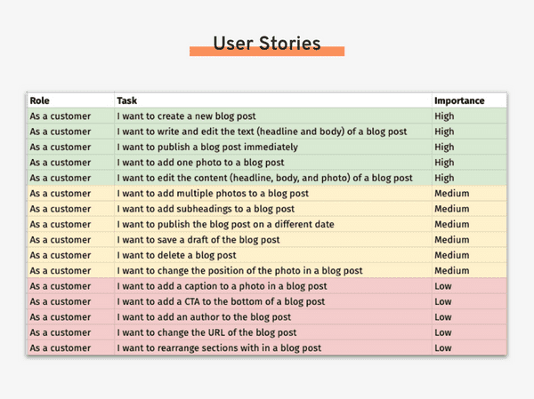
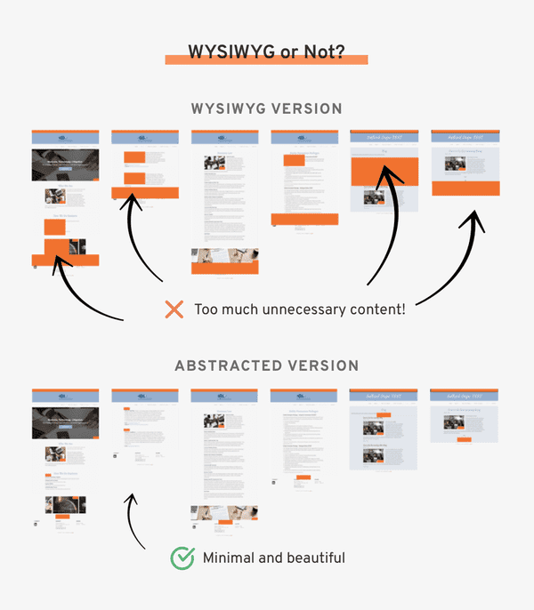
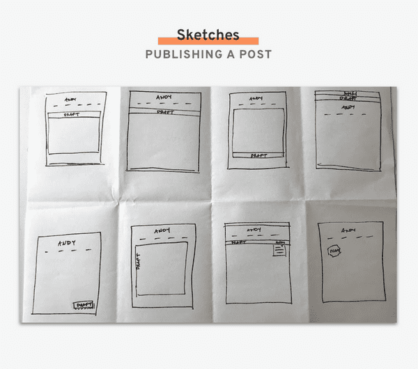
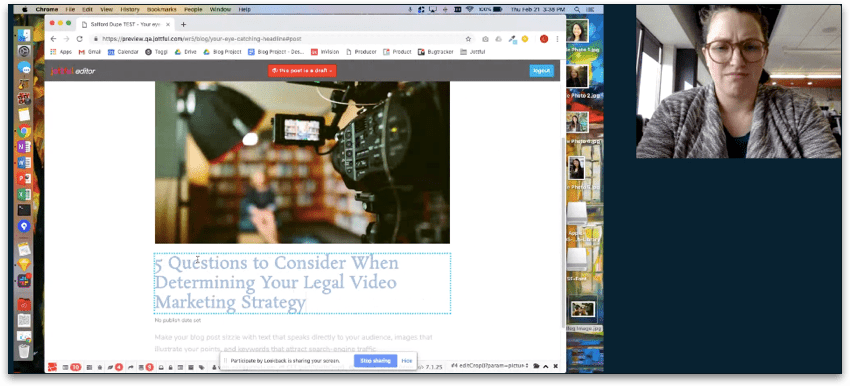
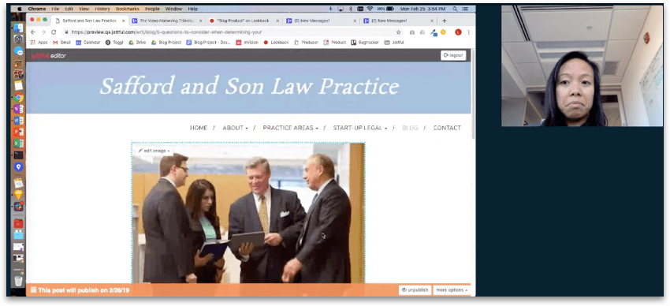
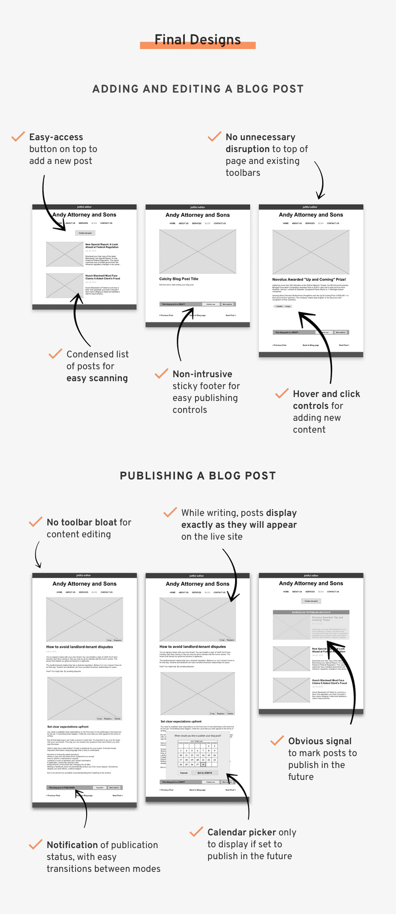

Project Context
Before I worked at Michigan Medicine, I worked at Jottful. Jottful is a startup that builds and maintains websites for small businesses. Its key product differentiator is a website editing software that's extremely easy for customer's to use, whether they consider themselves tech-savvy or not.
Problem Statement
How do you introduce blogging functionality while maintaining a low barrier to entry for less tech-savvy customers?
Phase 1: Research
Competitive Landscape
Squarespace and Wix are the most popular do-it-yourself website builders. I examined the blogging features of these two products for inspiration.
However, since the Jottful audience is much less tech-savvy than users of either Squarespace or Wix, I examined their products with the aim to discern what I should and shouldn't include in the Jottful version.
Understanding the User
In my role, I spoke regularly with customers. In addition to asking formal questions about their website needs, I also worked alongside them to create their sites.
The informal, unstructured time of working with them gave me deeper insights to their thoughts and habits, giving me intimate information about them with regard to the following questions:
- What are you motivations for building this website?
- What do you hope your website can do?
- How comfortable are you with various technologies?
- What are your goals in developing a blog feature?
- What are some of the biggest challenges you face in developing your blog?
- What is your process when you have edited your blog posts?
I consolidated my experiences into three User Personas and a User Journey.
Reflections on the User Stories
Writing the post is the most effortful part of the process. How can we make the UX and UI inviting and intuitive so the only anxiety comes from the content, and not from needing to navigate the system?
Also, locating the blog itself may not be as straightforward as it seems. How can we make the blog more easily findable on the site?
Phase 2: Iterate
User Stories
Prioritizing is one of the most difficult but most important part of the iteration phase. Using the competitive analysis as a basis for standard blog features, I worked with the CEO to rank user stories for development.
The MVP would ship with the High and Medium priority items.
Reflections on the User Stories
Originally, adding a photo was not in the MVP. But, after looking back on our competitive analysis we found that most people would not post a blog without a photo. We decided to follow the industry standard and increase the priority of including photos with blog posts.
Almost as important as what will be included in the product are features not included. For this project, features we deemed out of scope include: tags, categories, RSS feeds, location functionality, and comments.
List Page
The list page displays a whole series of posts, allowing visitors to the blog to scan through all of the author’s content.
The biggest priorities when designing this page were to:
- Make it clear to reader how to see more of the post
- Make it clear to author how to edit each post
- Keep the content-diverse page cohesive and tidy
Using the UI from a sample site on the Jottful platform, I explored two variations for the list page display.
List Page Winner
Variation 2 - Preview List. The compact nature of the preview list made it more appealing as a blog list choice. It also mimicked current design trends for blog list styles, which would add familiarity and trust to customer websites.
Adding a Post
The WYSIWYG standard on other areas of the site created a notable constraint for designing the flow for adding blog post. As I worked on this design, it became clear that there was a mismatch of expectations.
The CEO wanted all site content to be WYSIWYG, including every feature for the blogging experience. She argued that a WYSIWYG system is what makes software easy to use, and that pattern should not be broken. However, I believed that a WYSIWYG implementation would confuse users, especially for a feature-rich experience like maintaining a blog.
After endless discussion, I finally employed the designer maxim: show, don’t tell. I mocked up the visual below, showing her the content overload that would result from a WYSIWYG implementation. It helped her see the diminished experience she was arguing for. We came to an agreement for creating more abstracted designs.
After deciding on the overall direction, I used the Crazy 8's method of sketching and chose five versions to prototype.
Adding a Post Winner
Variation 1: New post button on top. We decided to add a "Create New Post" button with the styling that matched the other image editing buttons. A redesign of those buttons would come later with a UX refresh.
Editing a Post
Designing the functionality behind editing a post posed a challenge because there is an endless possibility of what could be done, so it’s critical to discern what should be done.
Because of the complexity of these interactions, I created clickable prototypes rather than just static pages. The full InVision prototypes can be found here.
Editing a Post Winner
Variation 1: New post button on top. We decided to add a "Create New Post" button with the styling that matched the other image editing buttons. A redesign of those buttons would come later with a UX refresh.
At first, I created “add section” buttons since that’s how the developer originally built the infrastructure. But upon review, I decided the idea of “sections” was a back-end structure that shouldn’t be exposed to the user. I learned my lesson: don’t default to basing design off of engineering!
Publishing a Post
In designing the final step of the blog post experience, I learned a couple valuable lessons.
I had prioritized taking as little screen real estate as possible. But upon critique, people found the feature to be less discoverable. I learned that adding a bulkier UI may be necessary to increase the discoverability of a key part of the workflow.
There was also debate over whether we should minimize clicks (by defaulting the user to a calendar on publish) or minimize UI bulk (by giving people a publish now or publish later button). I learned that the age-old rule of minimizing clicks may be overruled if the alternative is adding unnecessary cognitive strain.
Publishing a Post Winner
Variation 4: the sticky footer. The sticky footer was the least obtrusive of the designs, but was still discoverable and gave people the option to publish where they naturally would want to: at the end of their post.
At first I prioritized not taking up any more screen real estate, but found it to be less discoverable. I learned that adding a bulkier UI may be necessary to increase the discoverability of a key part of the workflow.
Phase 3: Validate
Usability Testing
The developer took my wireframes and programmed his the feature flows (adding his own UI). With his product prototypes, I conducted a series of usability tests to get feedback on the entire blog flow: adding a new post, editing and formatting it, and setting it to publish. I used Lookback to record the user’s face along with the screen.
Test Session with Katie
Based off this test session, we made the following adjustments to the product:
- Add a user-facing signal that their work is being saved. She was really anxious that the content that she had input wasn't saving. Even though we know on the back-end that we're saving every minute, we may want some front-end signal that indeed their work is being saved.
- Make the publish button more obvious on the page, wherever in the scroll you are. She was quite confused about how to publish. She initially wanted to set the publish date when she saw the placeholder underneath the heading, and then once she was actually ready to publish, she clicked "Next >" which took her to the next blog post. In the end she did not ever find the proper way to publish.
Test Session with Ann
Based off this test session, we made the following adjustments to the product:
- Adjust the default text so it’s clear that it’s text that will go away when a user types, rather than something buggy on the page.
- Make the save indicator more obvious. Although the site was saving her progress, the indicator flashed only once per minute and there was no save button, so she wondered and hoped out loud that the page saved when she navigated away from it.
- Remove confusing fields like “Title” while adding a hyperlink to minimize cognitive load when writing the post.
Phase 4: Finalize
Final Designs
I finalized the design, to hand off to the developer to implement within the various website styles. A feature highlight is shown below.
Open Questions and Future Work
Although the blog product has shipped, there are open questions we will continue to test and future work that will come from user feedback.
The most pressing things to address include:
- Complete a UI overhaul in the editor to make the look and feel more uniform and predictable
- Design different autosave indicators that make the autosave more obvious and reduce anxiety for users as they edit the site
- Re-examine image editing functionality to make the process easier and streamlined
- Revisit the lower-priority user stories with users to see what improvements and additions can be made